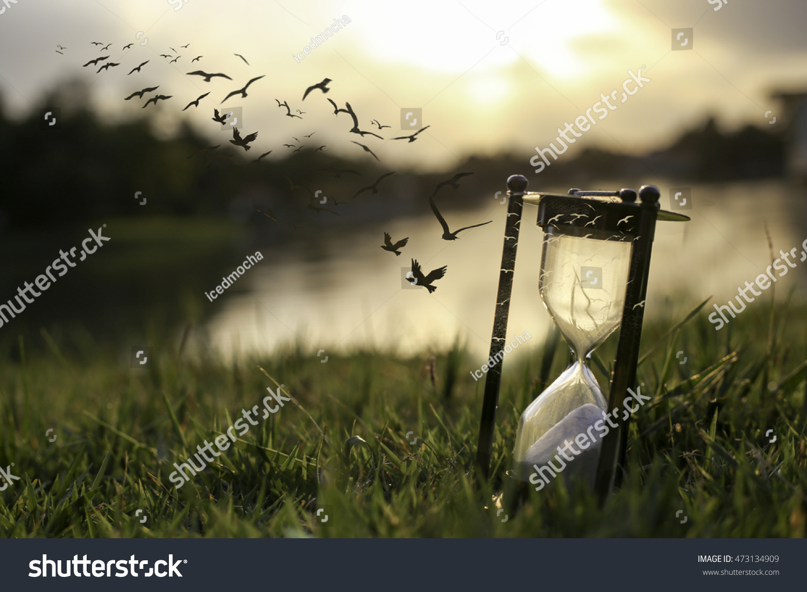

It has been a while

It has been a while since I last posted. Time has just been flying by so fast. I have lost track of time getting busy doing nothing. I should be posting more in the up comming week. I will see you all then.
I decided that I wanted to provide some inspiration during these trying times. So here is a quote from one of my most favourite movies of all time.
Get busy living or get busy dying – The Shawshank Redemption, 1994.
Have a good day everyone.